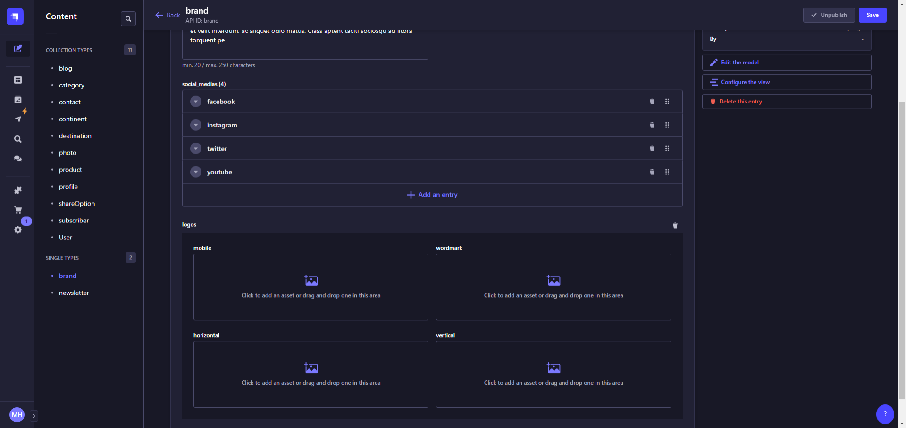
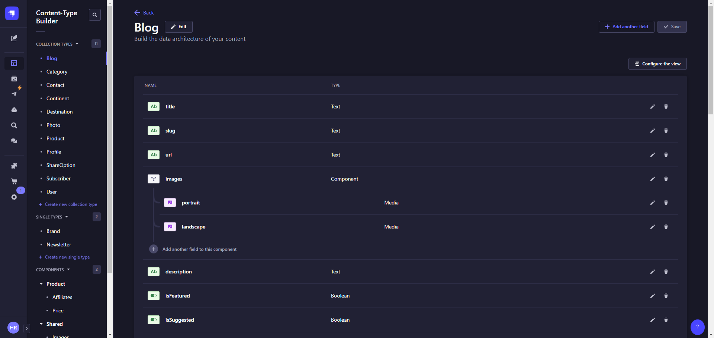
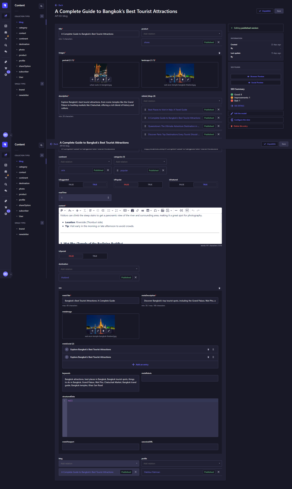

1. Customizing the Frontend
To customize the UI, you can modify the components in the /frontend folder. For example:
- Navbar and Footer: These components are located in the frontend/components/global directory. You can edit the navbar.ts and footer.ts files to customize the site’s navigation and footer sections.
To change the site’s logo:
- Replace the favicon file in frontend/src/app/favicon.ico with your own logo.
-
upload logos from strapi backend:

2. Customizing the Backend
For backend customization (e.g., adding new content types or fields):
-
Log in to the Strapi Admin Panel:
- Access the Strapi admin panel at http://localhost:1337/admin.
- Use the credentials created during the setup process.
-
Creating or Modifying Content Types:
- In the admin panel, navigate to Content-Type Builder.
- Create or edit content types as needed (e.g., add a new collection for blog posts, services, etc.).
-
Strapi makes it easy to add new fields, such as text, images, or relational fields.
 note: you can modify models only development mode
-
Managing Content:
-
Use the Content Manager in Strapi to create, edit, and delete content for your website. The changes you make here will be reflected on the frontend.

-
2. Common Issues and Troubleshooting
Issue: API Not Connecting
- Solution: Make sure the NEXT_PUBLIC_API_URL environment variable in the .env file is correctly pointing to your Strapi backend. Check that the backend is running and accessible.
Issue: Database Connection Failed
- Solution: Verify that the database configuration in the backend/.env file is correct. Ensure that the database server is running and accessible.
Issue: Port Already in Use
- Solution: If you encounter a "port already in use" error, change the default ports in the environment files or stop any other processes using the same port.
3. Support
If you run into any issues or need assistance, please reach out to our support team:
- Email: habibmir811@gmail.com
- Response Time: We typically respond within 24-48 hours.
Thank you for choosing TRAVELLER! We hope you enjoy building your website with this template.